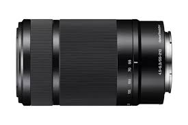
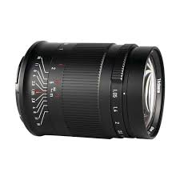
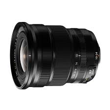
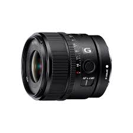

<!doctype html>
<html lang="en">

<head>
    <meta charset="utf-8">
    <meta name="viewport" content="width=device-width, initial-scale=1">
    <title>DIGI-CAM</title>
    <link href="https://cdn.jsdelivr.net/npm/bootstrap@5.3.3/dist/css/bootstrap.min.css" rel="stylesheet"
        integrity="sha384-QWTKZyjpPEjISv5WaRU9OFeRpok6YctnYmDr5pNlyT2bRjXh0JMhjY6hW+ALEwIH" crossorigin="anonymous">
</head>

<body>
    <script src="https://cdn.jsdelivr.net/npm/bootstrap@5.3.3/dist/js/bootstrap.bundle.min.js"
        integrity="sha384-Q/NZ/OWXljvWhKeW+Fw5W/ZcEq15E+4X9i2vAYTyy/yEC4U5+j7j79y5dVwbyXy5"
        crossorigin="anonymous"></script>
</body>
<style>
    .card-body {
        min-height: 600px;
    }
</style>

</html>
<header data-bs-themeSS="dark">
    <nav class="navbar navbar-expand-md navbar-dark fixed-top bg-dark">
        <div class="container-fluid">
            <a class="navbar-brand" href="#">DIGI-CAM</a>
            <button class="navbar-toggler" type="button" data-bs-toggle="collapse" data-bs-target="#navbarCollapse"
                aria-controls="navbarCSSSollapse" aria-expanded="false" aria-label="Toggle navigation">
                <span class="navbar-toggler-icon"></span>
            </button>
            <div class="collapse navbar-collapse" id="navbarCollapse">
                <ul class="navbar-nav me-auto mb-2 mb-md-0">
                    <li class="nav-item">
                        <a class="nav-link active" aria-current="page" href="digicam.html">Home</a>
                    </li>
                    <li class="nav-item">
                        <a class="nav-link" href="lensautknikon.html">Nikon</a>
                    </li>
                    <li class="nav-item">
                        <a class="nav-link" href="lensautkcanon.html">Canon</a>
                    </li>
                    <li class="nav-item">
                        <a class="nav-link" href="lensautkfuji.html">Fujifilm</a>
                    </li>
                    <li class="nav-item">
                        <a class="nav-link" href="lensautksony.html">Sony</a>
                    </li>
                </ul>
            </div>
        </div>
    </nav>
</header>
<main>
    <div id="myCarousel" class="carousel slide mb-6" data-bs-ride="carousel" data-bs-theme="light">
        <div class="carousel-indicators">
            <button type="button" data-bs-target="#myCarousel" data-bs-slide-to="0" class="active" aria-current="true"
                aria-label="Slide 1"></button>
            <button type="button" data-bs-target="#myCarousel" data-bs-slide-to="1" aria-label="Slide 2"></button>
            <button type="button" data-bs-target="#myCarousel" data-bs-slide-to="2" aria-label="Slide 3"></button>
        </div>
        <div class="carousel-inner">
            <div class="carousel-item active">
                
                <div class="container">
                    <div class="carousel-caption text-start">
                        <h1>LENS</h1>
                        <p>Lensa adalah komponen optik pada kamera yang terdiri dari beberapa elemen optik. Lensa ini
                            berfungsi untuk mengumpulkan cahaya dari objek yang difokuskan dan membentuk gambar pada
                            sensor atau film.</p>
                    </div>
                </div>
            </div>
        </div>

        <div class="album py-5 bg-body-tertiary">
            <div class="container">
                <h2 class="text-center">TELE</h2>
                <div class="row row-cols-1 row-cols-sm-2 row-cols-md-4 g-4">
                    <div class="col">
                        <div class="card shadow-sm">
                            <div class="card-body">
                                

                                <h4><a href="lensatelenikon.html">Nikon AF-S 70-200mm f/2.8E FL ED VR</a></h4>
                                <p class="card-text">Nikon AF-S 70-200mm f/2.8E FL ED VR mungkin bisa dikatakan sebagai
                                    lensa tele terbaik di dunia. Penuh dengan fitur futuristik, lensa ini adalah impian
                                    yang menjadi kenyataan untuk fotografer profesional.</p>
                            </div>
                        </div>
                    </div>
                    <div class="col">
                        <div class="card shadow-sm">
                            <div class="card-body">
                                

                                <h4><a href="lensatelecanon.html">CANON EF-S 55-250MM</a></h4>
                                <p class="card-text">lensa ini didesain hanya untuk DSLR Canon APS-C, maka fokal lensa
                                    ini akan ekuivalen atau setara dengan 90-400mm di full frame. Sangat berguna untuk
                                    potret, olahraga, satwa dan landscape yang perlu efek kompresi perspektif.</p>
                            </div>
                        </div>
                    </div>
                    <div class="col">
                        <div class="card shadow-sm">
                            <div class="card-body">
                                

                                <h4><a href="lensatelefuji.html">FUJIFILM XF 55-200mm f3.5-4.8 R LM OIS</a></h4>
                                <p class="card-text">XF 55-200mm f/3.5-4.8 R LM OIS Lens from Fujifilm is a telephoto
                                    zoom lens for the Fujifilm X-series mirrorless cameras. It offers a 35mm focal
                                    length equivalency of 84-305mm, providing portrait length to super telephoto
                                    capabilities.</p>
                            </div>
                        </div>
                    </div>
                    <div class="col">
                        <div class="card shadow-sm">
                            <div class="card-body">
                                

                                <h4><a href="telesony.html">E 55-210mm f4.5-6.3 OSS</a></h4>
                                <p class="card-text">SEL55210 menawarkan jangkauan yang Anda butuhkan untuk subjek
                                    seperti olahraga dan alam. Stabilisasi gambar bawaan mengurangi blur saat memotret
                                    di rentang panjang atau dalam low-light.</p>
                            </div>
                        </div>
                    </div>
                </div>

                <br><br>
                <h2 class="text-center">FIXED</h2>
                <div class="row row-cols-1 row-cols-sm-2 row-cols-md-4 g-4">
                    <div class="col">
                        <div class="card shadow-sm">
                            <div class="card-body">
                                

                                <h4><a href="lensafix.html">Yongnuo 50Mm F1.8</a></h4>
                                <p class="card-text">Yongnuo 50mm 1: 1.8 (YN50mm F1.8N) adalah lensa fast nifty five
                                    yang sangat murah dari pabrikan Cina Yongnuo Digital.</p>
                            </div>
                        </div>
                    </div>
                    <div class="col">
                        <div class="card shadow-sm">
                            <div class="card-body">
                                

                                <h4><a href="lensafixedcanon.html">EF50mm f/1.8 STM</a></h4>
                                <p class="card-text">TEF50mm f/1.8 STM memiliki bodi yang menyertakan dudukan logam,
                                    memanfaatkan stepping motor (STM) yang memastikan pengoperasian gerakan fokus
                                    otomatis yang senyap dan cepat.</p>
                            </div>
                        </div>
                    </div>
                    <div class="col">
                        <div class="card shadow-sm">
                            <div class="card-body">
                                

                                <h4><a href="lensafixfuji.html">TTartisan AF 27MM F2.8 XFo</a></h4>
                                <p class="card-text">Fujifilm 35mm f / 1.4 XF R Lens ini adalah lensa "normal" yang
                                    setara dengan 53mm dalam format 35mm.</p>
                            </div>
                        </div>
                    </div>
                    <div class="col">
                        <div class="card shadow-sm">
                            <div class="card-body">
                                

                                <h4><a href="fixedsony.html">7artisans 50mm F1.05</a></h4>
                                <p class="card-text">50mm f/1.05 Lens, from 7artisans, is a versatile normal-length
                                    prime characterized by its distinct and bright f/1.05 maximum aperture, along with
                                    an intuitive all-manual design.</p>
                            </div>
                        </div>
                    </div>
                </div>

                <br><br>
                <h2 class="text-center">WIDE</h2>
                <div class="row row-cols-1 row-cols-sm-2 row-cols-md-4 g-4">
                    <div class="col">
                        <div class="card shadow-sm">
                            <div class="card-body">
                                

                                <h4><a href="lensawidenikon.html">Nikon AF-S 20mm f/1.8G ED</a></h4>
                                <p class="card-text">lensa prima Nikon 20mm f/1.8G ED yang dirancang terutama untuk
                                    fotografi lanskap, astrofotografi, arsitektur, dan potret lingkungan.</p>
                            </div>
                        </div>
                    </div>
                    <div class="col">
                        <div class="card shadow-sm">
                            <div class="card-body">
                                

                                <h4><a href="lensawidecanon.html">Canon 16-35mm f/2.8 L USM</a></h4>
                                <p class="card-text">Lensa super wide angle ini dibekali dengan bukaan aperture yang
                                    cukup lebar yakni 2.8 yang mampu menghasilkan area blur lebar dan mengisolari
                                    subjek.</p>
                            </div>
                        </div>
                    </div>
                    <div class="col">
                        <div class="card shadow-sm">
                            <div class="card-body">
                                

                                <h4><a href="lensawidefuji.html">Fujinon 10-24mm F/4</a></h4>
                                <p class="card-text">Fujinon 10-24mm F/4 adalah salah satu lensa yang membuktikan bahwa
                                    nama besar kadang tidak akan membohongi hasil. Lensa produksi Fujifilm ini mungkin
                                    merupakan salah satu lensa terbaik untuk menangkap gambar-gambar landscape yang
                                    indah dalam satu frame.</p>
                            </div>
                        </div>
                    </div>
                    <div class="col">
                        <div class="card shadow-sm">
                            <div class="card-body">
                                

                                <h4><a href="MIRRORLESS.html">E 15mm f1.4 G APSC</a></h4>
                                <p class="card-text">Rendering & bokeh spektakuler di G Lens F1.4 lebar</p>
                            </div>
                        </div>
                    </div>
                </div>
            </div>
        </div>
    </div>
    </div>


    <footer class="container">
        <p class="float-end"><a href="#">Back to top</a></p>
        <p>&copy; Final Project Wong Tulus &middot; <a href="#">Privacy</a> &middot; <a href="#">Terms</a></p>
    </footer>
</main>